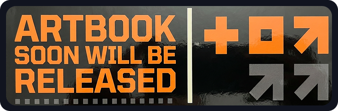

パラ
サイト
サイト


Scroll

A self-published independent manga series by Dave Rindo Rindo. Drawn between client work and louder coffees — a quiet place you can hold in your hands.
Parasite_Manga is my creative side-project — a self-published space where I get to draw whatever I want, free from briefs, deadlines and brand guidelines. It started as a sketchbook habit and slowly grew into its own world of recurring characters, ink studies and short-form stories.
Each piece is hand-drawn, mostly in black ink with the occasional bleed of red. The work lives somewhere between manga, editorial illustration and personal diary — a quiet place you can hold in your hands.